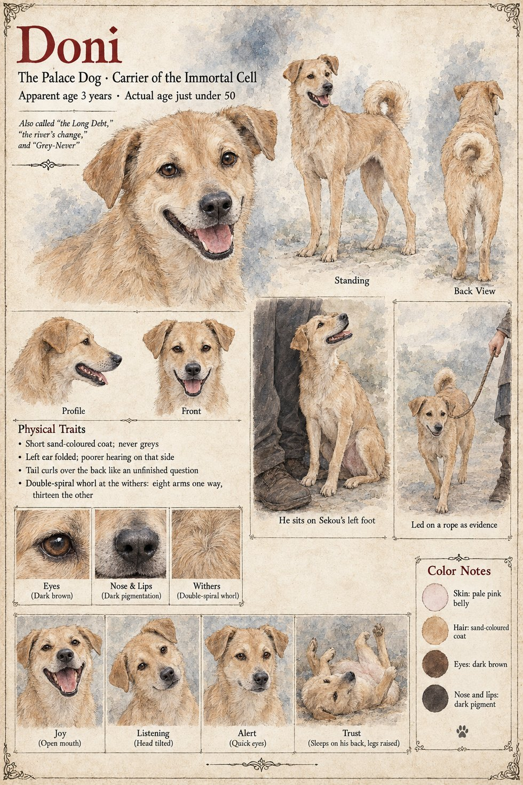

Doni
The palace dog, carrier of the Immortal Cell · also the Long Debt and the river's change · young-adult condition for nearly fifty years
A lean, sand-colored, middling animal with one ear that folds over and one that does not, a tail that curls across its back like a question nobody has finished asking, and a habit of tilting its head when addressed, which visitors take for intelligence and Kolo knows for a bad left ear. It sleeps on its back with its legs in the air. It steals sandals, never chewing them, only carrying them, one at a time, to a single corner of the yard, where a small hill grows; it greets everyone, from the grain-clerk to the Chief Elder, with the same undignified, full-body joy. Sana named it Doni, a placeholder syllable meaning roughly nothing, and the Archival Log closes on that: the local designation on file is Doni, the translation is nothing, and This desk has checked.
It swallows the Immortal Cell from a sealed pouch in Sana's satchel, beside dried meat. As Observer 1,451's Interlude II sets it down, the Cell arrests senescence and repairs damage within limits: it does not restore what was never intact, so the folded ear and the poor hearing on the left are unchanged after more than forty years, and it does not preclude death by catastrophic trauma; heritability is unassessed. Its one visible signature is at the withers, where Kolo counts, by firelight, a whorl that has arranged itself out of a scribble of crossed fur into a double spiral, eight arms one way and thirteen the other. When a stable mule kicks it across the ribs in Sekou's tenth winter it mends by the third evening. It blinks eleven times to the minute, and Kolo has never told a soul that he counts.
In the cold of the harmattan it crosses the lean-to where Sekou, a kennel-boy, is sleeping with numb bare feet, turns around twice and lies across them, and by the end of that season sits on his foot the way other dogs sit on hearthstones. It was not devotion, exactly; devotion is an attitude, and this was a habit. It lies across the cold feet of a dying king, Tiemoko, and, at the first Weighing, walks the length of the Ancestor Court through some fifteen hundred people and sits on Sekou's left foot. At the Second Asking it is set down three paces from Alassane, sniffs his hand, with the perfect manners it shows to everyone, and trots the twenty-seven remaining paces up the raked lane to sit on Sekou's foot again. Captain Wuro takes it on a rope as evidence, the first time in fifty years it has worn one, and it goes along delighted, its curled tail waving.
On the Uncounted Day of its fiftieth year in the yard it wakes at the step of a stranger, as it always does, rolls over, beats its tail twice against the mat and comes to lick her hand. Sira kills it with a blade, once, and it does not know. Observer 1,451 arrives eleven minutes late, puts a small sandal back on the hill and files the case as moot. Kolo buries it under the hill of sandals, with a cord of fifty cowries beside it. The treasury line for its ration, For the dog of the boy Damba — millet, four measures by the moon; dried fish, six; to continue., goes on being copied for three centuries. The Log's reading of its fifty years is that its sole recorded behavior was the provision of warmth to those it knew when they were cold, and that the institutions around it converted this, in order, into a mandate, a fraud, a sign, a standard, and a target.
The manuscript supplies the colour, build, ears, tail, whorl and habits; the sheet's 55 cm at the shoulder, 19 kg and dark brown eyes are its own. Its title strip gives an apparent age of 3 years and an actual age just under 50, and lists the names the Long Debt, the river's change and Grey-Never; the manuscript gives the third name to Hawa's darker beer, not to the dog. Its panels are Joy, Listening, Alert and Trust, and its two scenes are He sits on Sekou's left foot and Led on a rope as evidence.
“the most reliably warm thing in the terrarium”